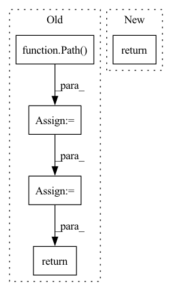

Pattern ID :42026
Before Change
return image
def _load(self):
base = Path( "/usr/src/data/animefacedataset/images")
image_paths = base.glob("*")
image_paths = [str(path) for path in image_paths]
return image_paths
class YearAnimeFaceDataset(Dataset):
def __init__(self, image_size, min_year=2005):After Change
super().__init__(transform)
def _load(self):
return glob.glob("/usr/src/data/animefacedataset/images/*")
class YearAnimeFaceDataset(AnimeFaceDataset):
"""AnimeFaceDataset with minimum year optionIn pattern: SUPERPATTERN
Frequency: 3
Non-data size: 5
Instances Fragment ID: 117753380
Project Name: stomoya/animeface
Commit Name: 21e86e8dc2d49667e6edb8863004a229eeb6798a
Time: 2021-02-20
Author: blackie0110@gmail.com
File Name: implementations/general/anime_face.py
M Class Name: AnimeFaceDataset
N Class Name: AnimeFaceDataset
M Method Name: _load(1)
N Method Name: _load(1)
M Parent Class: Image
N Parent Class: Dataset
M File Name: implementations/general/anime_face.py
N File Name: implementations/general/anime_face.py
M Start Line: 42
M End Line: 45
N Start Line: 25
N End Line: 25
Before Change
return image
def _load(self):
base_path = Path( "/usr/src/data/danbooru/danbooru-images")
image_paths = base_path.glob("**/*.jpg")
image_paths = [str(path) for path in image_paths]
return image_paths
class GeneratePairImageDanbooruDataset(Dataset):
def __init__(self, pair_transform, image_size):After Change
transform = make_default_transform(image_size, 1.2)
super().__init__(transform)
def _load(self):
return glob.glob("/usr/src/data/danbooru/danbooru-images/**/*.jpg", recursive=True)
class GeneratePairImageDanbooruDataset(DanbooruDataset):
"""Automatically generated pair images Danbooru Dataset Fragment ID: 117753382
Project Name: stomoya/animeface
Commit Name: 21e86e8dc2d49667e6edb8863004a229eeb6798a
Time: 2021-02-20
Author: blackie0110@gmail.com
File Name: implementations/general/danbooru.py
M Class Name: DanbooruDataset
N Class Name: DanbooruDataset
M Method Name: _load(1)
N Method Name: _load(1)
M Parent Class: Image
N Parent Class: Dataset
M File Name: implementations/general/danbooru.py
N File Name: implementations/general/danbooru.py
M Start Line: 31
M End Line: 35
N Start Line: 14
N End Line: 14
Before Change
def check_mock_dataset_exists(dataset_root: Union[str, Path], needed_dfs: Sequence[str] = MOCK_DATASET_FILES) -> bool:
dataset_root = Path( dataset_root)
files_exist = [(dataset_root / df_name).exists() for df_name in needed_dfs]
for im in ["rectangle", "circle", "triangle", "cross", "equal", "hat", "sign", "star"]:
for i in range(1, 4):
files_exist.append((dataset_root / "images" / f"{im}_{i}.jpg").exists())
return all(files_exist)
def download_mock_dataset(dataset_root: Union[str, Path]) -> Tuple[pd.DataFrame, pd.DataFrame]:After Change
def check_mock_dataset_exists(dataset_root: Union[str, Path]) -> bool:
return check_exists_and_validate_md5(dataset_root, MOCK_DATASET_MD5)
def download_mock_dataset(dataset_root: Union[str, Path]) -> Tuple[pd.DataFrame, pd.DataFrame]: Fragment ID: 117753374
Project Name: oml-team/open-metric-learning
Commit Name: 029b6bb4ef76bb7439b1baeebb2c3a3b8737edbd
Time: 2022-10-03
Author: aleksei.v.tarasov@gmail.com
File Name: oml/utils/download_mock_dataset.py
M Class Name: AnonimousClass
N Class Name: AnonimousClass
M Method Name: check_mock_dataset_exists(1)
N Method Name: check_mock_dataset_exists(2)
M Parent Class:
N Parent Class:
M File Name: oml/utils/download_mock_dataset.py
N File Name: oml/utils/download_mock_dataset.py
M Start Line: 17
M End Line: 23
N Start Line: 19
N End Line: 20